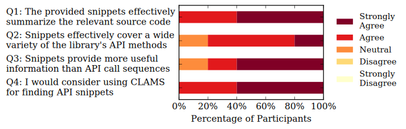

A novel approach for mining API Usage Examples in the form of source code snippets, from client code
This page contains the user survey of CLAMS, a system for mining API usage snippets from client source code. You can check the source code repository of CLAMS here to find out more about our approach.
We conducted a user survey in a team of 5 Java developers of Hotels.com to evaluate whether our approach can be useful when developing software. We executed CLAMS on a set of internal company libraries and indexed the extracted API snippets for each library. After that, we isolated the API calls and created a simple web interface to allow developers to see the snippets that are relevant to each API call. For each API call, developers were presented with the most relevant snippets, each accompanied by a link to the originating source code and a list of its API call sequences. Upon reviewing the top 10 most frequent API calls of the team's 3 most used libraries (i.e.~30 snippets in total), the developers had to answer 4 questions using a Likert five-point scale: Strongly Agree, Agree, Neutral, Disagree, and Strongly Disagree. All team members were familiar with the usage patterns of these libraries. The figure below includes the questions asked and summarizes the responses.

All participants agree or strongly agree that the snippets effectively summarize the source code (Q1), while 80% of them also deems the API coverage as effective (Q2) and the same percentage shows preference for snippets over sequences (Q3). Furthermore, for Q1, participants were asked to characterize each snippet separately as an effective summary of the corresponding source code or not. In this question, each participant rated at least 24 out of 30 snippets in total as effective summaries. Similarly, for Q2, developers also had to decide whether the snippets of each of the 3 libraries effectively cover it, a question that was answered positively by 80% of the participants for all 3 libraries.
Finally, the overall reception of our system was quite favorable, as all participating developers would consider using our system CLAMS for finding API usage examples (Q4). A few indicative comments from developers are the following:
Developer 1: The system generates clear and concise snippets which would be easy to follow and useful when using an API you are unfamiliar with.
Developer 2: The system is great and I think it would be very useful particularly in discovering clients of our APIs.